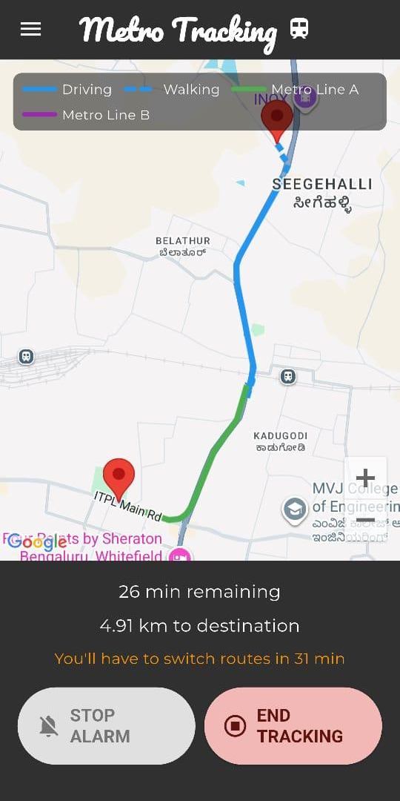
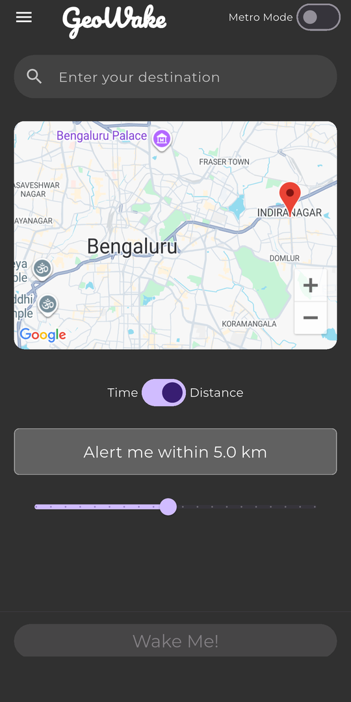
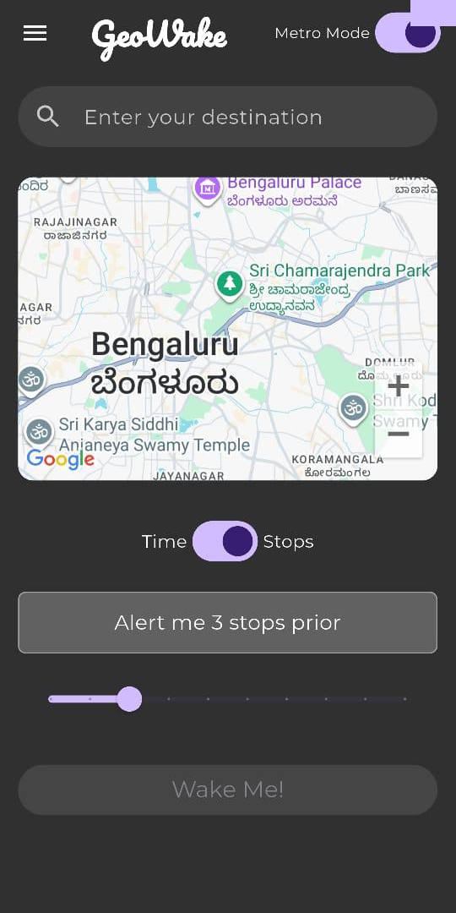
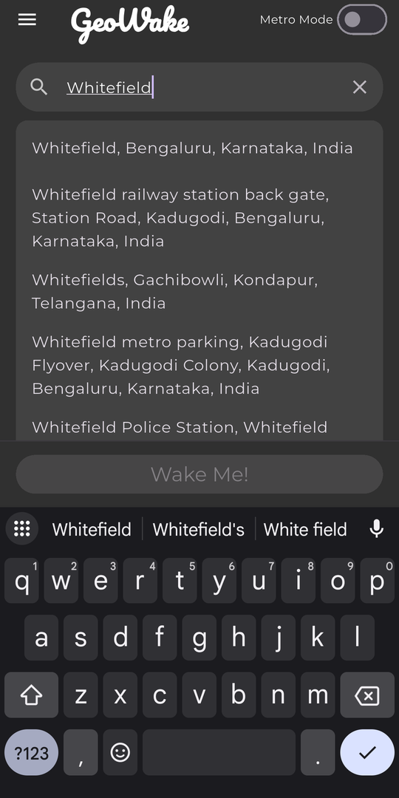
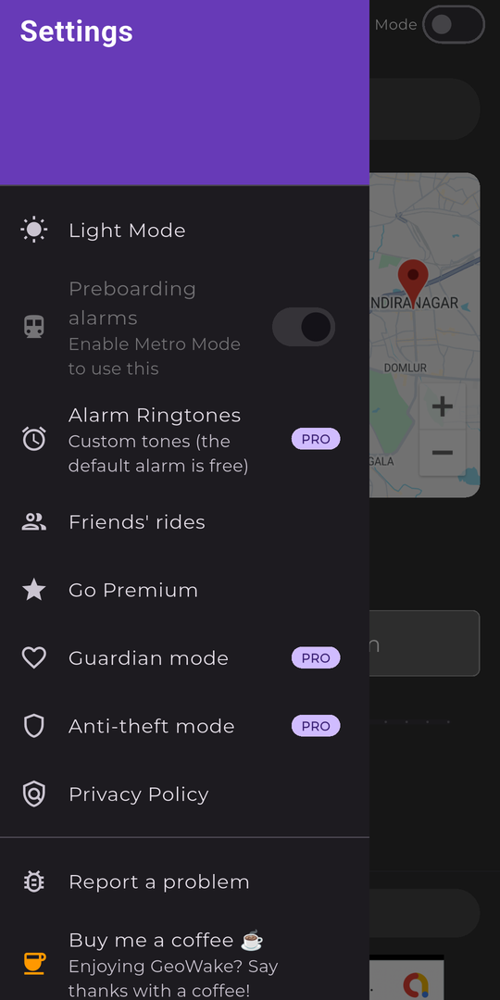
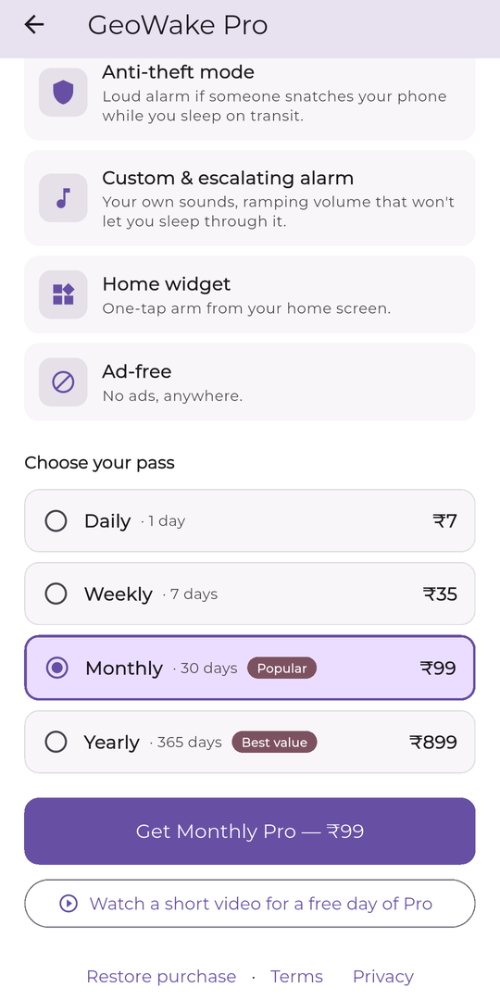

Sleep through the commute.
Not your stop.
GeoWake rings on Android's alarm channel — the same one your morning alarm uses — and keeps tracking you when the train goes underground and GPS cuts out.
- The alarm is free. Forever, with no cap.
- Prepaid passes from ₹7. No auto-renew, ever.
- ~790 stations across 20 Indian metro networks.

You dozed off. You woke up four stops late.
The commute is the one stretch of the day you could actually sleep through — except you can't, because nothing reliably wakes you at the right station.
A maps app shows a silent notification. It slides into the tray with everything else and makes no sound. If your phone is on silent, or you're actually asleep, it does nothing at all.
An alarm is a different kind of object. It plays on the alarm stream, at alarm volume, and it doesn't stop until you deal with it. GeoWake is that — pointed at a place instead of a time.
Six taps from your pocket to asleep.
No concept art below — these are screenshots of the shipping build.

Pick a place, pick a radius
Distance or time. Drag the slider to choose how much warning you want before you arrive.

Metro Mode counts stops
Underground, kilometres are the wrong unit. Flip Metro Mode and set the alarm in stops instead.

Search anything, not just stations
Autocomplete over real places — an office, a station gate, a friend's street. GeoWake routes to it.
Every leg, colour-coded
Walk, drive, Line A, Line B. You get a heads-up before each interchange — not just at the end.

Everything in one drawer
Theme, ringtones, Guardian, anti-theft, privacy. Nothing buried three levels deep.

Buy a pass, like a metro card
Prepaid, not subscribed. It runs out and stops. Nothing renews behind your back.
Below ground, GPS is gone.
GeoWake keeps counting.
This is the problem every other “wake me at my stop” app quietly gives up on. A tunnel has no sky, so it has no satellites — and a location that stops updating looks exactly like a train that stopped moving.
It assumes the worst, on purpose
The moment your signal drops, GeoWake stops trying to pin down exactly where you are and starts tracking the furthest you could possibly have got. Your phone's motion sensors and the shape of the line itself keep the estimate alive in the dark.
Because it always assumes you're moving as fast as the line allows, it errs toward waking you a stop early. What it won't do is stay quiet while you sail past your station.
- Keeps counting through the tunnel, not just up to it.
- Tuned to fire early rather than risk firing late.
- Knows the difference between a metro, an express and a long-distance train.
- Recorded journeys are replayed against every release. A late alarm fails the build.
Built to survive a real commute.
Everything on this page is free. Pro adds convenience on top — it never adds safety.
A real alarm, not a notification
Plays on Android's alarm audio stream with alarm-priority vibration, so it cuts through silent mode and vibrate. Grant notification-policy access once during setup and it breaks Do Not Disturb too.
Keeps tracking underground
Your phone's motion sensors and the shape of the line hold your position through tunnels — where a plain GPS app just freezes on the last place it saw you.
Never quietly late
Given two answers about where you are, GeoWake always acts on the earlier one. Silence means you haven't got there yet — not that something failed.
Outlives the app
A foreground service does the tracking, and the OS holds a scheduled exact-alarm backstop. If Android kills the process — or the phone reboots — the wake is still armed.
Multi-leg journeys
Walk, bus, Line A, interchange, Line B. GeoWake alarms you at each transfer and again at the destination. Free, not a Pro upsell.
Station data ships inside
Roughly 790 stations across 20 Indian metro networks are compiled into the app, so stop matching never waits on a round trip to a server.
The gap is the tunnel.
| Capability | A maps app | A train-tracker app | GeoWake |
|---|---|---|---|
| Wakes a sleeping passenger | Silent notification | No alarm at all | Alarm stream + vibration |
| Position while underground | Freezes at the last fix | Coarse cell-tower only | Keeps counting in the dark |
| Alarm set in stops, not kilometres | No | No | Metro Mode |
| Warns you before each interchange | Only if you're watching | No | An alarm per leg |
| Still fires if the app is killed | No | No | OS exact-alarm backstop |
| Cost of the core feature | Free, ad-supported | Free, ad-supported | Free forever, ₹7 to go ad-free |
Your commute on autopilot.
The never-late alarm is free forever. Pro adds convenience, not safety — and it's completely ad-free.
Completely ad-free Pro
No ads. Anywhere in the app, on any screen. (The alarm, wake and lock screens are never ad-supported on any tier — Pro clears everything else, including the tracking map.)
Guardian mode Pro
Share your journey with someone who's waiting on you. They follow your progress along the route — and get an “arrived safely” when your alarm fires.
Anti-theft mode Pro
Accelerometer and gyroscope watch for a snatch while you're asleep. If your phone is grabbed, it screams. Adjustable sensitivity, and you can test it before you trust it.
Custom & escalating alarm Pro
Eleven bundled tones to pick from, and the volume ramps instead of blasting — starts gentle, climbs until you're actually awake. Escalating haptics to match.
Home-screen widget Pro
Your usual route, one tap from the home screen. Same commute every day shouldn't cost you a search every day.
Day pass on the house Free
Watch one short video and get 24 hours of full Pro. No card, no account. Try the whole thing before you spend ₹7 on it.
Pay for it the way you pay for the metro.
A prepaid pass. It runs for its term and then it stops. There is no auto-renew to cancel, because there's no subscription to begin with.
The alarm is free forever. Not a trial, not capped, not degraded — the never-late wake-up is the free tier. Every pass unlocks the same full Pro set, and a free 24-hour pass is always one short video away.
Launching on Android.
GeoWake is in final testing ahead of its Google Play release. iOS is on the roadmap, not the calendar.
Google Play On the roadmap
App Store